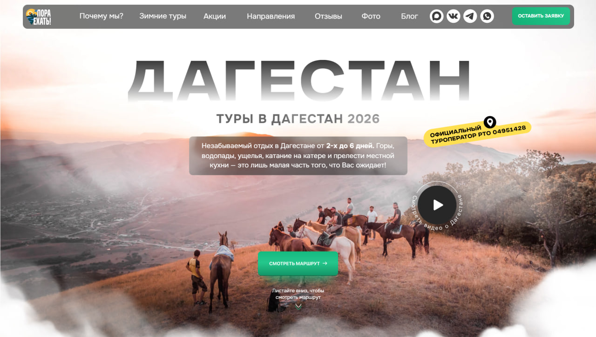
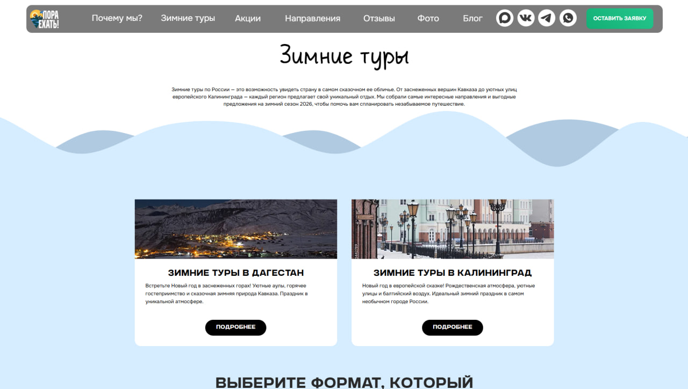
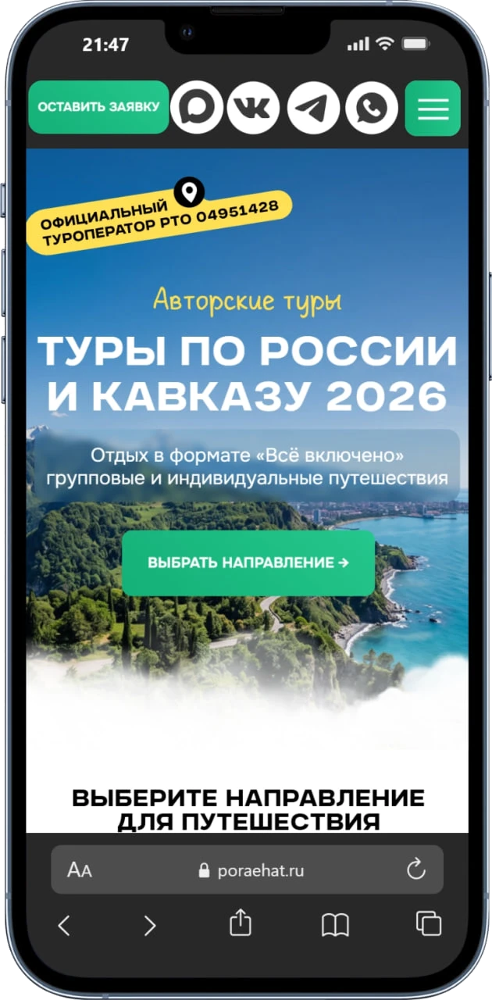

Bosh sahifa/Loyihalar/Dagestantur
Sayohatni birinchi ekranda sotish
«Пора ехать!» — Rossiya va Kavkaz bo'ylab mualliflik turlari uyushtiruvchi rasmiy turoperator. Turizmda qaror hissiyot bilan qabul qilinadi, lekin pul faktlar bilan to'lanadi. Shuning uchun sayt ikkalasini bir vaqtda beradi: manzara va aniq javob.

Nimadan boshladik
Chiroyli rasm hali sotmaydi
Turizmda o'nlab bir xil sayt bor: bir xil tog', bir xil «незабываемый отдых». Foydalanuvchi bir necha oynani parallel ochadi va sekundlar ichida qaysi biri jiddiy ekanini hal qiladi.
- Turoperator haqiqiymi — buni tekshirish kerak
- Tur necha kun, qayerga va nima kiradi — javob darrov kerak
- Qish va yoz butunlay boshqa taklif, lekin sayt bitta
- Aloqa ko'pincha messenjerda, saytda emas
Manzara, dalil va harakat — bitta ekranda
Birinchi ekranda manzil nomi ulkan harflarda va uning ustida haqiqiy fotosurat. Yonida — rasmiy reyestr raqami bilan belgi: bu ishonchni bir soniyada beradi. Pastda yashil tugma va marshrutga o'tish.
- Tur davomiyligi va nima kirishi hero matnida aytiladi
- Video-doira — «Dagiston haqida video ko'rish»
- Mavsumiy sahifalar o'z badiiy yo'nalishiga ega
- Telegram, WhatsApp, VK va Dzen sarlavhada — bir tegishda
Sayt qanday ko'rinadi
Bosh sahifa
Butun ekranni egallagan fotosurat va uning ustida «ДАГЕСТАН» — shaffof, ammo o'qiladigan katta harflar. Matn qorong'i yarim shaffof plita ustida: rasm ham ko'rinadi, matn ham o'qiladi.
- Sariq belgi: rasmiy turoperator va reyestr raqami
- Yashil tugma — sahifadagi yagona asosiy harakat
- Video-doira o'ng tomonda, aylanma yozuv bilan
- Pastda «pastga suring» ishorasi — sahifa davom etadi
Qishki turlar
Mavsumiy sahifa o'z ko'rinishiga ega: qo'lyozma sarlavha, moviy fon va qor tepaliklari. Bu bir xil shablon emas — mavsum o'zgarganda saytning kayfiyati ham o'zgaradi.
- Yo'nalishlar kartochkalari: surat, tavsif va «batafsil»
- Har bir kartochka alohida sahifaga olib boradi
- Quyida format tanlash bloki — guruh yoki individual

Telefondagi ko'rinish
Telefonda tartib o'zgaradi: birinchi navbatda «ariza qoldirish» tugmasi va messenjerlar, keyin sarlavha. Turizmda ko'pchilik telefondan kiradi va darhol yozishni xohlaydi — shu yo'l qisqartirildi.
- To'rtta messenjer belgisi doim ko'rinadigan joyda
- Reyestr belgisi hero ichida qoladi — ishonch yo'qolmaydi
- Yashil tugma butun kenglikda, barmoq bilan bosishga qulay

Nima o'zgardi
Rasmiy turoperator belgisi birinchi ekranda — tekshirish uchun izlash shart emas.
Qishki taklif o'z sahifasi va o'z kayfiyati bilan keladi.
Telefondan messenjerga o'tish bir tegishda — ariza yo'qolmaydi.
APEC Asia UAE
Keysni ochish → KonsaltingYakov and Partners
Keysni ochish → Ishlab chiqarish · ERPVAC.UZ
Keysni ochish → ERP + CRM + MoliyaAvenir OS
Keysni ochish →Sizning xizmatingizni ham shunday ko'rsatamiz
Brif to'ldirish shart emas — qisqacha yozing, qolganini savol berib aniqlaymiz.